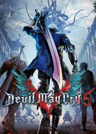

Devil May Cry 5
Lançado em: 8 de Março, 2019
Plataformas: PlayStation 4, Xbox One, PC
Sobre: Devil May Cry 5 é um jogo de ação-aventura hack 'n' slash desenvolvido e publicado pela Capcom. A jogabilidade de Devil May Cry 5 é espetacular. A palavra central aqui é “variedade“. O jogo conta com três protagonistas, que são três personagens jogáveis: Nero, V e Dante. Além do gameplay de cada um deles ser completamente diferente do outro, o que já seria suficiente para garantir uma boa dose de variedade ao longo do jogo, cada personagem conta com uma série de novas habilidades e equipamentos para desbloquear, fazendo com que o jogo esteja em constante evolução ao longo de toda a campanha. O enredo do jogo em si, não é dos mais complexos, surge um novo demônio quase invencível com fome de poder e os heróis Nero e Dante vão ter que se unir a um novo e misterioso personagem, V, para derrotar a ameaça.
Em geral, é um ótimo jogo para os amantes da série e para pessoas que gostam do gênero hack 'n' slash.